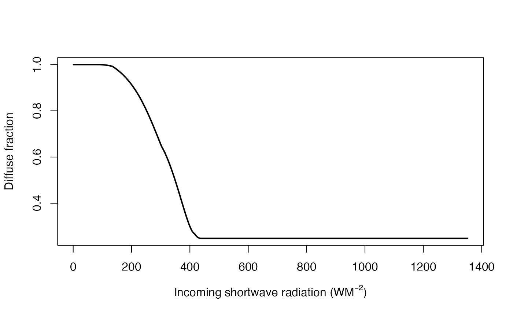

Calculates the diffuse fraction from incoming shortwave radiation
Source:R/climatefunctions.R
difprop.Rddifprop calculates proportion of incoming shortwave radiation that is diffuse radiation using the method of Skartveit et al. (1998) Solar Energy, 63: 173-183.
Arguments
- rad
a vector of incoming shortwave radiation values (W/m^2)
- julian
the Julian day as returned by
julday()- localtime
a single numeric value representing local time (decimal hour, 24 hour clock)
- lat
a single numeric value representing the latitude of the location for which partitioned radiation is required (decimal degrees, -ve south of equator).
- long
a single numeric value representing the longitude of the location for which partitioned radiation is required (decimal degrees, -ve west of Greenwich meridian).
- hourly
specifies whether values of
radare hourly (see details).- merid
an optional numeric value representing the longitude (decimal degrees) of the local time zone meridian (0 for GMT).
- dst
an optional numeric value representing the time difference from the timezone meridian (hours, e.g. +1 for BST if
merid= 0).
Details
The method assumes the environment is snow free. Both overall cloud cover and heterogeneity in cloud cover affect the diffuse fraction. Breaks in an extensive cloud deck may primarily enhance the beam irradiance, whereas scattered clouds may enhance the diffuse irradiance and leave the beam irradiance unaffected. In consequence, if hourly data are available, an index is applied to detect the presence of such variable/inhomogeneous clouds, based on variability in radiation for each hour in question and values in the preceding and deciding hour. If hourly data are unavailable, an average variability is determined from radiation intensity.
Examples
rad <- c(1:1352) # typical values of radiation in W/m^2
jd <- 2459752 #"2022-06-21" as julian day
dfr <- difprop(rad, jd, 12, 50, -5)
plot(dfr ~ rad, type = "l", lwd = 2,
xlab = expression(paste("Incoming shortwave radiation (", W*M^-2, ")")),
ylab = "Diffuse fraction")
